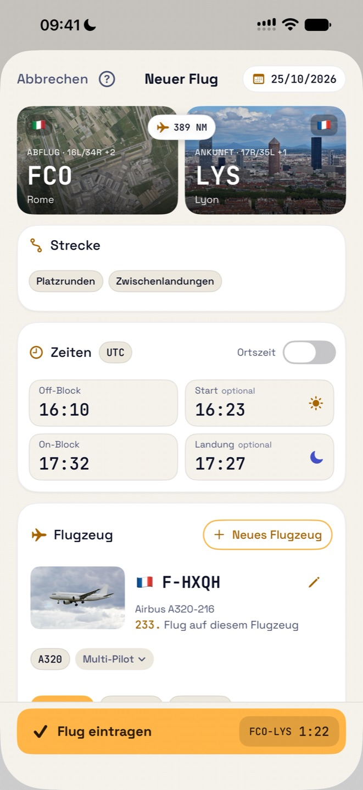
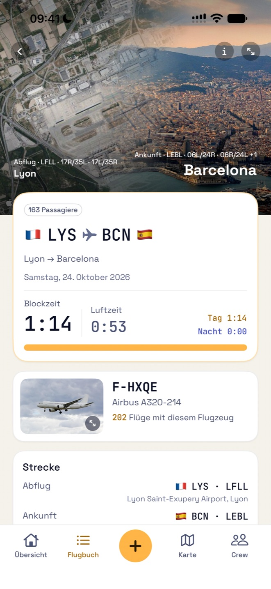
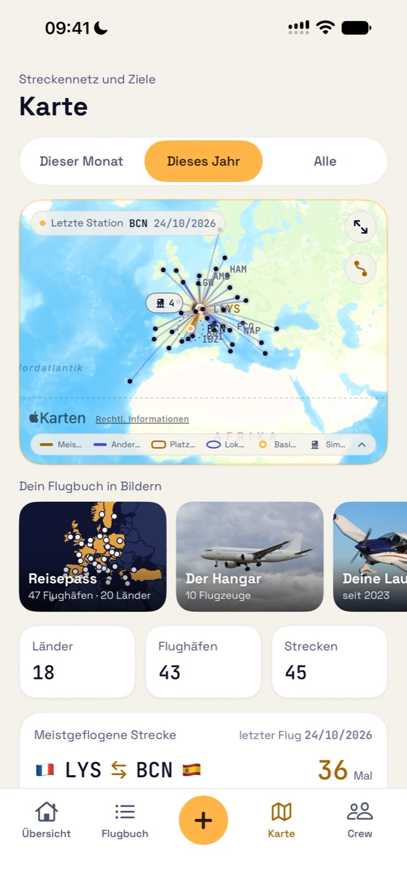
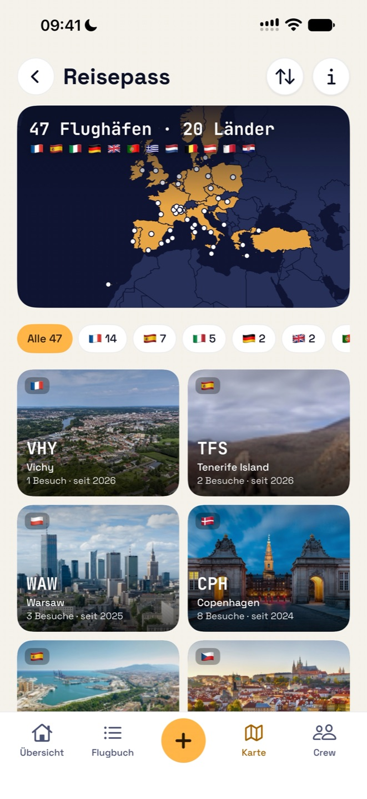
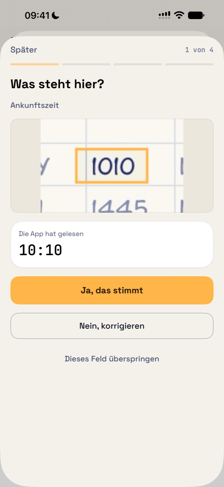
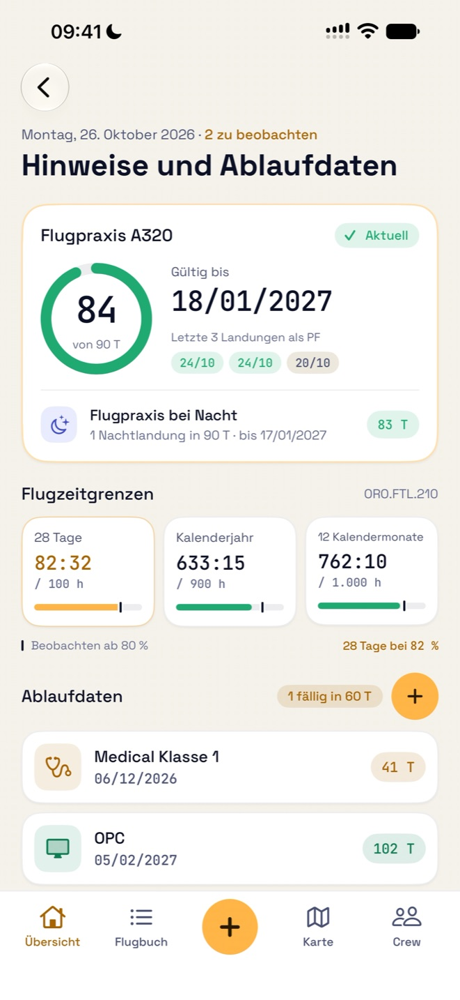

Kostenlos
0 € für Ihre ersten 50 Flüge
- Alle Funktionen, Importe inklusive
- Kein Konto nötig
- Keine Werbung
EASA-Flugbuch · AMC1 FCL.050
Jeder Flug endet mit dem Abfangen, dem Flare. Danach gehört er ins Flugbuch.
Das EASA-Flugbuch für Verkehrspiloten, Privatpiloten und Flugschüler, auf iPhone und iPad. Nachtzeit, Starts und Landungen werden für Sie berechnet; Flugpraxis, Flugzeitgrenzen und Ablaufdaten haben Sie stets im Blick.
Kostenlos für Ihre ersten 50 Flüge · Ohne Konto · Ohne Werbung
Flare führt Ihr Flugbuch nach dem Muster, das die EASA in AMC1 FCL.050 festlegt: dieselben Spalten, dieselben Summen, Seite für Seite.
Flare ist von der EASA weder zertifiziert noch genehmigt; die EASA genehmigt keine Flugbuch-Apps. Die App folgt dem Format von AMC1 FCL.050, und Ihre nationale Behörde entscheidet, ob sie ein elektronisches Flugbuch anerkennt.
Alles, was die EASA von Ihrem Flugbuch verlangt, ohne die mühsame Arbeit.
Strecke und Blockzeiten eingeben: Nachtzeit sowie Starts und Landungen bei Tag oder Nacht werden aus dem Sonnenstand berechnet, nach der EASA-Definition oder Ihrer eigenen Regel.
Die Pisten des Abflugs und die Stadt der Ankunft, in echten Fotos. Platzrunden werden auf der echten Piste gezeichnet, lokale Flüge auf der Karte, und Simulatorsitzungen haben ihr eigenes.
Fotografieren Sie jede Seite im Querformat. Flare prüft das Lesen, bevor das Foto behalten wird, lernt Ihre Handschrift anhand einiger Felder, die Sie bestätigen, und zeigt bei jedem unsicheren Wert das Feld aus Ihrem Foto. Alles wird auf Ihrem Gerät gelesen.
Flugpraxis nach FCL.060 je Flugzeugtyp, Flugzeitgrenzen nach ORO.FTL.210 und Erinnerungen, bevor Medical, Berechtigungen und Checks ablaufen.
Übernehmen Sie Ihre Historie aus einer CSV- oder Excel-Datei oder einem PDF-Flugbuch im EASA-Format. Die Spalten werden für Sie erkannt und die Summen geprüft.
Importieren Sie Ihren Dienstplan aus dem iPhone-Kalender oder einer .ics-Datei: Geflogene Flüge werden hinzugefügt und sind bereit zum Ergänzen.
Ein druckfertiges EASA-Flugbuch als PDF im A4-Querformat und ein CSV-Export aller Ihrer Flüge.
Alle Ihre Strecken und Flughäfen auf einer Karte. Die Flughafendatenbank ist in die App integriert.
Ein Pass Ihrer Flughäfen und Länder, ein Hangar aller geflogenen Flugzeuge, Ihre Laufbahn Schritt für Schritt, Ihre Rekorde und Ihr Flugjahr, bereit zum Teilen.
FSTD-Sitzungen mit Übung (OPC, LPC, EBT …), Prüfer und Funktion, in einer eigenen Spalte: nie als Flugzeit gezählt.
Filtern Sie Ihr Flugbuch und sehen Sie die Summen genau der angezeigten Flüge.
Addieren und subtrahieren Sie Zeiten in Stunden und Minuten oder in Dezimalstunden und lesen Sie die Summe in beiden Formaten.
Gesamtzeit, Flugpraxis und nächstes Ablaufdatum auf dem Home- und Sperrbildschirm; das Kennzeichen am App-Symbol zählt, was Ihre Aufmerksamkeit braucht.
Kurze animierte Anleitungen zeigen jede Geste in der App, in Ihrer Sprache und im Tag- oder Nachtdesign der App.
Eine App für iPhone und iPad, auf Deutsch, Englisch, Französisch, Spanisch und Italienisch.






Kurze Filme der App, so wie ihre Hilfe sie zeigt.
Kostenlos starten. Ohne Werbung.
0 € für Ihre ersten 50 Flüge
29,99 € pro Jahr
79,99 € einmalig
Nur Flüge zählen: Simulatorsitzungen und Positionierungen nicht. Ohne Pro oder nach dem Ende des Abonnements bleibt Ihr Flugbuch lesbar, bearbeitbar und exportierbar: Nur das Hinzufügen von Flügen erfordert Pro.
Zahlung und Verlängerung wickelt Apple über Ihren Apple Account ab. Der Preis ist in Euro angegeben; der App Store zeigt den Preis für Ihr Land.
Flare hat weder Konto noch Server. Der Entwickler erhebt keine personenbezogenen Daten.
Import, Dienstplan, Abonnement, iCloud: Die Antworten finden Sie auf der Support-Seite.
Zum Support